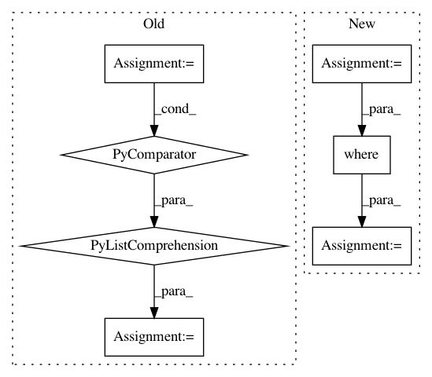

b127d30a0a0a3d3d7ad94dd629d2e673b6477cc8,scipy/spatial/_spherical_voronoi.py,SphericalVoronoi,_calc_vertices_regions,#SphericalVoronoi#,264
Before Change
)
// calculate regions from triangulation
self.regions = [[k for k in range(0, len(self._tri.simplices))
if n in self._tri.simplices[k]]
for n in range(0, len(self.points))]
def sort_vertices_of_regions(self):
For each region in regions, it sorts the indices of the Voronoi
After Change
)
// calculate regions from triangulation
generator_indices = np.arange(self.points.shape[0])
filter_tuple = np.where((np.expand_dims(self._tri.simplices
, -1) == generator_indices).any(axis=1))
list_tuples_associations = zip(filter_tuple[1],
filter_tuple[0])
list_tuples_associations = sorted(list_tuples_associations,
In pattern: SUPERPATTERN
Frequency: 4
Non-data size: 7
Instances
Project Name: scipy/scipy
Commit Name: b127d30a0a0a3d3d7ad94dd629d2e673b6477cc8
Time: 2016-02-16
Author: tyler.je.reddy@gmail.com
File Name: scipy/spatial/_spherical_voronoi.py
Class Name: SphericalVoronoi
Method Name: _calc_vertices_regions
Project Name: tensorflow/ranking
Commit Name: 6bf3f51cd0a312da842157665663c2dad9983248
Time: 2021-01-29
Author: xuanhui@google.com
File Name: tensorflow_ranking/python/losses_impl.py
Class Name: ClickEMLoss
Method Name: _compute_latent_prob
Project Name: ntucllab/libact
Commit Name: e857888dff9361561fcc96068ab50f79ed5a26bc
Time: 2017-01-30
Author: yangarbiter@gmail.com
File Name: libact/query_strategies/query_by_committee.py
Class Name: QueryByCommittee
Method Name: make_query
Project Name: biolab/orange3
Commit Name: 69a472517120ffee300a967b2fe9b3bc05f5cf4b
Time: 2015-06-23
Author: ales.erjavec@fri.uni-lj.si
File Name: Orange/widgets/unsupervised/owmds.py
Class Name: OWMDS
Method Name: _setup_plot